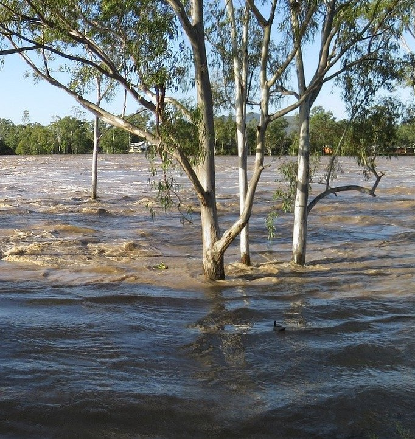

Heavy rain has caused flooding in parts of Australia. Flooding is when water covers land that is usually dry. Many people are helping those in need.
The worst flooding is in New South Wales (NSW) and South East Queensland (QLD). About 40,000 people have been evacuated. Evacuated means moved to a safe place. In some areas, 100mm of rain fell in one hour.
The floods have damaged homes and blocked roads. Rivers have overflowed, which means the water went over the river banks. Some homes lost power. The rain is slowing down, but flooding may continue for more days.
Emergency workers are helping people every day and night. In NSW, 1,700 SES volunteers are on duty. SES means State Emergency Service. Fire crews are helping them, and rescue teams saved more than 200 people from floodwater.
Marine Rescue NSW has also helped. Marine means relating to the sea. They moved people from flooded homes to safety. They helped a 93-year-old person and a pregnant woman. Police rescued eight greyhounds and a fox terrier too.
The Prime Minister and the Premier of NSW both thanked the volunteers for their hard work.